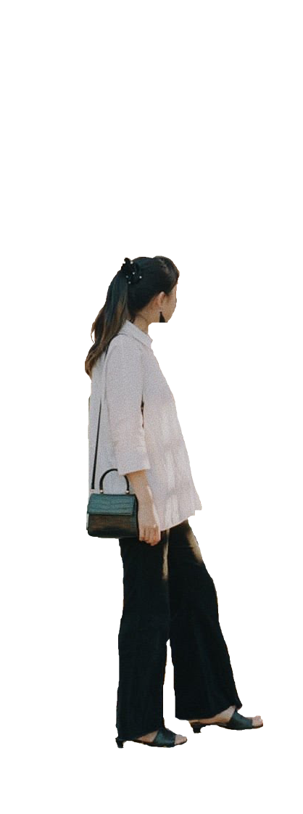
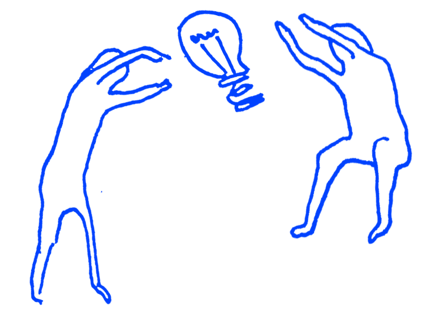

<DOCTYPE html>
<html lang="en">


<meta charset="UTF-8">
<meta name="viewport" content="width=device-width, initial-scale=1.0">
<script src="https://ajax.googleapis.com/ajax/libs/jquery/3.5.1/jquery.min.js"></script>
<link rel="stylesheet" type="text/css" href="style.css">
<link rel="stylesheet" href="https://fonts.googleapis.com/css?family=Archivo">

<title>Alice Yuan Zhang</title>

<!-- <header>
	<div class="header_icon"><a href="mailto:intrinsicolor@gmail.com"></a></div>
	<div class="header_icon"></div>
	<div class="header_icon"><a href="https://virtualcarelab.com/"></a></div>
</heaver> -->


<div class="page-wrap">

<!-- 	<video autoplay muted loop id="background">
	  <source src="mentalscape_naohai.mp4" type="video/mp4">
	</video> -->

	<body>
		
		<div id="links">
			<section>
				<a href="https://www.3hd-festival.com/commissions/requiem-for-lost-plants/" target="_blank">
				<div class="item" style="background-image: url('images/willow.png'); background-size: contain; background-position: no-repeat; margin-left: 50px; width: 200px; height: 200px"></div></a>

				<a href="https://virtualcarelab.com/" target="_blank"><div class="item" style="background-image: url('images/vcl.png'); background-size: contain; background-position: no-repeat; width: 140px; height: 100px; margin-top: 10px; margin-left: 30px"></div></a>


				<a href="https://docs.google.com/spreadsheets/d/1Hpry0CCfduHChDd1hD35jKFvijGp30Zb03wg0Ft8owQ/" target="_blank"><div class="item" style="background-image: url('images/sharkfish.png'); background-size: contain; background-position: no-repeat; width: 115px; height: 100px; margin-top: 40px;margin-left: 100px"></div></a>
			</section>

			<section style="margin: 10px">


			<a href="https://miro.com/app/board/o9J_kr2R0Mc=/" target="_blank">
				<div class="item" style="background-image: url('images/stopsign.png'); background-size: contain; background-position: no-repeat; margin-bottom: 20px; width: 70px; height: 200px"></div></a>

			<a href="https://www.youtube.com/watch?v=a7hXX4P1woA" target="_blank"><div class="item" style="background-image: url('images/kitespool.png'); background-size: contain; background-position: no-repeat; width: 90px; height: 150px;"></div></a>


			<a href="https://www.instagram.com/ar/3888208884528781/" target="_blank"><div class="item" style="background-image: url('images/womb.png'); background-size: contain; background-position: no-repeat; width: 100px; height: 120px; margin-left: 70px"></div></a>


			<a href="https://www.behance.net/gallery/129403227/Remembering-Our-Roots-AR" target="_blank">
				<div class="item" style="background-image: url('images/shanmazha.gif'); background-size: contain; background-position: no-repeat; margin-top: 40px; width: 150px; height: 120px"></div></a>

			</section>

			<section>
			<a href="https://www.instagram.com/ar/3756760941111424/" target="_blank"><div  class="item" style="background-image: url('images/cordycep.png'); background-size: contain; background-position: no-repeat; width: 135px; height: 170px; margin-bottom: 20px;"></div></a>

			<a href="https://www.culturehub.org/open-garden" target="_blank"><div  class="item" style="background-image: url('images/gardeninstructions.png'); background-size: contain; background-position: no-repeat; width: 260px; height: 130px; margin-right: 60px;"></div></a>

			


			<section>
				<a href="https://newart.city/show/eat-me" target="_blank"><div class="item" style="background-image: url('images/eatme.png'); background-size: contain; background-position: no-repeat; margin-left: -20px; width: 250px; height: 60px"></div></a>
			</section>

		</section>

		</div>
</body>

		
		<div id="bkgdtext">
			<marquee behavior="scroll" direction="up" >
			<b>ALICE 元 ZHANG IS A
			MEDIA ARTIST AND CULTURAL ORGANIZER
			WHO TELLS STORIES TO WEAVE
			THE BITSPHERE AND BIOSPHERE
			<br><br>
			SHE DREAMS OF A RELATIONAL WEB
			WITH PHONE LINES TO INTERSPECIES
			NEIGHBORS, TOOLS FOR TIME TRAVEL, 
			AND SPACE FOR PLAYFUL ANCESTORS
			TO REHEARSE MYCELIAL STRATEGIES OF CARE
			<br><br>

			</b>
			</marquee>
		</div>

	
	

	<div id="myPopup" onclick="closePopup()">
		

		<div id="PopupText">
		<b>Nice to e-meet you! 👋</b> 
		My name is Alice Yuan Zhang 张元 (she/her).
		<br><br>
		I'm a Chinese-American media artist, researcher, and cultural organizer currently living in Berlin. My transdisciplinary practice bridges ecology and technology, working to empower decolonial praxis and heal alongside marginalized communities through ancestral remembering, interspecies pedagogy, and networked solidarity. 
		<br><br>
		I am a research resident at <a href="https://0xsalon.pubpub.org/">0x Salon</a> studying decentralized community technologies, resident artist at a living commons called <a href="https://moos.garden/">Moos.garden</a>, founding steward of <a href="https://virtualcarelab.com/" target="_blank">virtual care lab</a>, past resident artist at <a href="https://www.culturehub.org/" target="_blank">CultureHub</a>, and community member of <a href="https://www.navel.la/">NAVEL Los Angeles</a>. 
		<br><br>
		I have taught Media Studies for Performance at Sarah Lawrence College, facilitated an independent study group on <a href="https://navel.la/events/assembliesq3-quarterly/" target="_blank">Digital Matterealities</a> with NAVEL, and hosted lectures, workshops, and other learning engagements across academic institutions including CalArts, Harvard, Duke, NYU ITP, and University of Toronto, arts institutions such as Goethe-Institute, Iowa PS1, and MAK Center, and independent cultural spaces like SFPC, Tiny Tech Zines, SOFTER, and Creamcake Berlin. I studied at University of California, Berkeley. 
		<br><br>
		<hr><br>
		You can reach me by <a href="mailto:intrinsicolor@gmail.com">email</a>, or find me on <a href="https://www.instagram.com/aliceyuanzhang/">Instagram</a> and <a href="https://www.twitter.com/aliceyuanzhang/">Twitter</a>.
		</div>
	</div>
</div>


<script>

// When the user clicks on <div>, open the popup

var aboutOpen = 0;

function openPopup() {
	if ( aboutOpen == 0) {
		document.getElementById("myPopup").style.display = "block";
		aboutOpen = 1;
	} else {
		document.getElementById("myPopup").style.display = "none";
		aboutOpen = 0;
	}
}

</script>

<!-- <script>
    var dragItem = document.querySelector(".item");
    var links = document.querySelector("#links");

    var active = false;
    var currentX;
    var currentY;
    var initialX;
    var initialY;
    var xOffset = 0;
    var yOffset = 0;

    links.addEventListener("touchstart", dragStart, false);
    links.addEventListener("touchend", dragEnd, false);
    links.addEventListener("touchmove", drag, false);

    links.addEventListener("mousedown", dragStart, false);
    links.addEventListener("mouseup", dragEnd, false);
    links.addEventListener("mousemove", drag, false);

    links.addEventListener("click", onClick, false);

    function onClick(e) {
    	if (active) {
    		active = false;
    	} else {
    		dragItem.toggle();
    	}
    }

    function dragStart(e) {
      if (e.type === "touchstart") {
        initialX = e.touches[0].clientX - xOffset;
        initialY = e.touches[0].clientY - yOffset;
      } else {
        initialX = e.clientX - xOffset;
        initialY = e.clientY - yOffset;
      }

      if (e.target === dragItem) {
        active = true;
      }
    }

    function dragEnd(e) {
      initialX = currentX;
      initialY = currentY;

      active = false;
    }

    function drag(e) {
      if (active) {
      
        e.preventDefault();
      
        if (e.type === "touchmove") {
          currentX = e.touches[0].clientX - initialX;
          currentY = e.touches[0].clientY - initialY;
        } else {
          currentX = e.clientX - initialX;
          currentY = e.clientY - initialY;
        }

        xOffset = currentX;
        yOffset = currentY;

        setTranslate(currentX, currentY, dragItem);
      }
    }

    function setTranslate(xPos, yPos, el) {
      el.style.transform = "translate3d(" + xPos + "px, " + yPos + "px, 0)";
    }
  </script> -->


</html>

